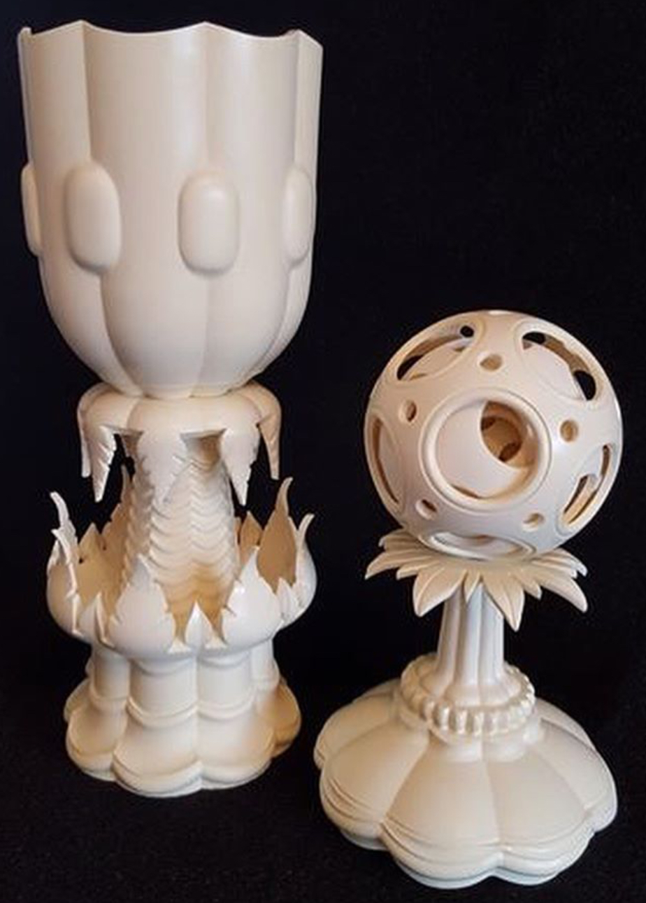

|
|

|
Materials Used in Ornamental Turning
Artificial Ivory |
|

Artificial Ivory
Picture courtesy Al Collins Ornamentally Turned Objects Artificial Ivory is typically made from a resin, and is beautiful.. Al Collins has used this material to make some amazing objects (you can see some of his work on his Instagram page). He does this using fixed tool work, and gave a presentation about such work at the 2018 Ornamental Turners International Symposium. Ornamental Turning Notes My experience is limited with this, and I found it difficult to control chipping it out. Possibly the material I was using was not good, but learning to properly cut it is recommended before tackling something as grand as the work Al makes. Finishing Finishing this should not be necessary. |
|
Other Al Collins gave this presentation about working artificial ivory with fixed tools. |